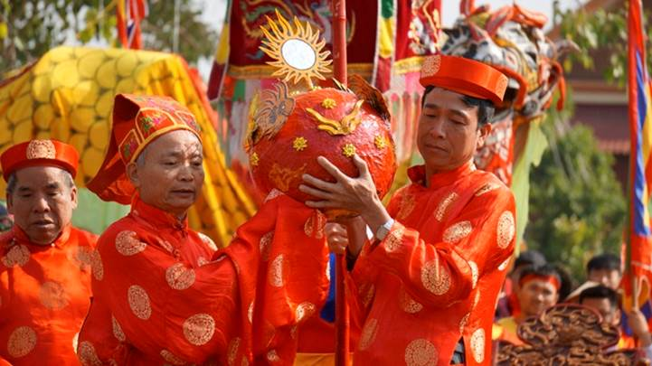

Hội vật cầu Kim Sơn

Theo người dân địa phương, tướng quân Phạm Ngũ Lão khi đi kinh lý qua vùng này đã bày ra trò vật cầu để rèn luyện sức khỏe cho binh sĩ. Dần dần, vật cầu trở thành một lễ hội truyền thống được tổ chức tại sân đình làng Kim Sơn vào ngày mùng 6 tháng Giêng.
3 năm 1 lần, lễ hội vật cầu làng Kim Sơn mới được tổ chức. Ảnh Lê Tân.
Giữa sân đình có một hố tròn gọi là lỗ cầu cái. Đường vào sân đình có 3 cửa Đông, Nam, Bắc và được dựng 3 cổng trào. Các dòng họ trong làng sẽ chia thành ba giáp Đông, Nam, Bắc phân biệt theo sắc phục đỏ, vàng, xanh. Mỗi giáp có thủ lĩnh gọi là tổng cờ và 5 đô vật là những trai làng mạnh khỏe, dũng cảm để cùng thi đấu tranh nhau một quả cầu bằng củ chuốt hột nặng đến 25 kg.
Đặc biệt, lễ hội vật cầu có thể lệ thi đấu rất khắc nghiệt. Do 3 giáp (15 người) cùng thi đấu tranh cầu 1 lúc nên hình thành thế 5 người đấu với 10 người. Các giáp phải dùng sức mạnh, mưu trí để đưa cầu từ lỗ cái về lỗ phụ nơi giáp mình “đóng quân”
Do rất khó đưa cầu về lỗ phụ nên lễ hội năm nay phải thay đổi thể thức thi đấu. Giáp nào đưa cầu về gần lỗ 10 m được tính 5 điểm, 5 m được tính 10 điểm. Tuy nhiên, sau 3 hiệp (mỗi hiệp 15 phút) và tốn rất nhiều công sức, không giáp nào có thể ghi được điểm.
Lễ hội kết thúc khi quả cầu được đưa xuống ao đình để tắm rửa.
Sáng 30.1 (tức mùng 6 tết), hàng trăm người đổ về sân đình làng Kim Sơn để xem lễ hội vật cầu. Ảnh Lê Tân.Theo người dân địa phương, tướng quân Phạm Ngũ Lão khi đi kinh lý qua vùng này đã bày ra trò vật cầu để rèn luyện sức khỏe cho binh sĩ. Ảnh Lê Tân.Dần dần, vật cầu trở thành một lễ hội truyền thống được tổ chức tại sân đình làng Kim Sơn vào ngày mùng 6 tháng Giêng. Ảnh Lê Tân.Đây là lễ hội truyền thống được tổ chức 3 năm 1 lần nên người dân địa phương và du khách rất háo hức chờ đợi. Ảnh Lê Tân.Lễ hội được tổ chức ở sân đình làng Kim Sơn. Giữa sân đình có một hố tròn gọi là lỗ cầu cái. Ảnh Lê Tân.Các dòng họ trong làng sẽ chia thành ba giáp Đông, Nam, Bắc phân biệt theo sắc phục đỏ, vàng, xanh. Ảnh Lê Tân.Sau một số nghi lễ, quả cầu được bô lão trong làng rước ra thả xuống hố cái. Ảnh Lê Tân.Quả cầu nặng 25 kg, làm bằng củ chuối hột. Ảnh Lê Tân.Mỗi giáp có thủ lĩnh gọi là tổng cờ và 5 đô vật là những trai làng mạnh khỏe, dũng cảm để cùng tranh nhau quả cầu. Ảnh Lê Tân.Do 3 giáp (15 người) cùng thi đấu tranh cầu 1 lúc nên hình thành thế 5 người đấu với 10 người. Ảnh Lê Tân.Các giáp phải dùng sức mạnh, mưu trí để đưa cầu từ lỗ cái về lỗ phụ nơi giáp mình “đóng quân”. Ảnh Lê Tân.Do quá khó để đưa cầu về lỗ phụ nên lễ hội năm nay phải thay đổi thể thức thi đấu. Giáp nào đưa cầu về gần lỗ 10 m được tính 5 điểm, 5 m được tính 10 điểm. Ảnh Lê Tân.Tuy nhiên, sau 3 hiệp (mỗi hiệp 15 phút) và tốn rất nhiều công sức, không giáp nào ghi được điểm. Ảnh Lê Tân.Có thể nói, thể lệ hội vật cầu làng Kim Sơn là rất khắc nghiệt, đòi hỏi các giáp phải khéo léo, mưu trí và… may mắn mới có thể chiến thắng. Ảnh Lê Tân.Lễ hội kết thúc khi quả cầu được đưa xuống ao đình để tắm rửa. Ảnh Lê Tân.